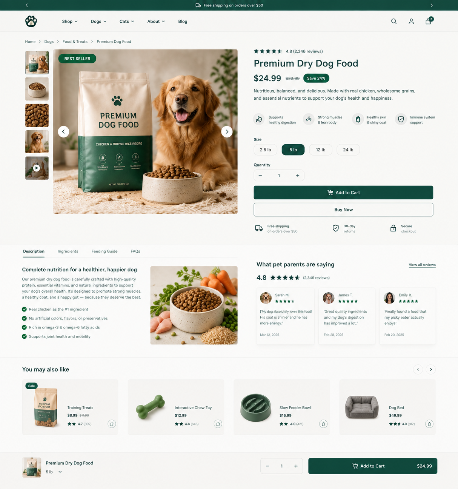

03 · Pet Ecommerce · Product UX + CRO
Premium pet product page built for purchase confidence.

The conversion structure
The page puts the product gallery beside a concise value proposition, rating, price, savings, benefits, variants and quantity controls. The primary Add to Cart CTA is immediately visible, followed by Buy Now.
Trust after the CTA
Shipping, returns and secure-checkout reassurance sit close to the purchase action. Below that, product education and customer reviews help answer objections without forcing the shopper to leave the page.
Merchandising
A related-products section gives shoppers a natural next step and creates opportunities for cross-sell discovery without distracting from the main purchase.